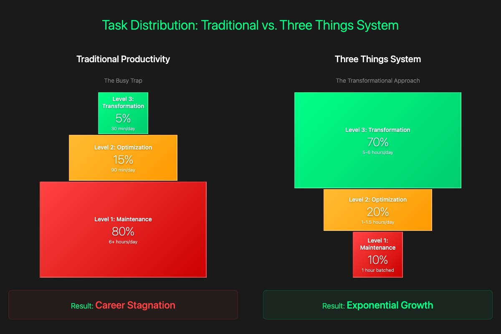

The Three Things Productivity System: The Science of Doing Less to Achieve More
How focusing on 3 transformational tasks daily creates exponential improvement—backed by 100+ years of productivity research from Ivy Lee to modern neuroscience.
⏱ 20 min read •
October 18, 2025 •
By Signal/Noise Team
You completed 20 tasks yesterday. Checked 50 emails. Attended 6 meetings. By 6 PM, you were exhausted—but when you looked back, you couldn't identify a single meaningful accomplishment.
Sound familiar?
Welcome to the busy vs. productive paradox. According to Harvard Business Review research, knowledge workers average 1,200 app switches per day, losing nearly 4 hours per week just reorienting after context switches.
The economic cost? Over $450 billion annually in lost productivity.
The "Three Things" productivity system offers a different approach—one rooted in productivity science spanning over a century, from the 1918 Ivy Lee Method to cutting-edge neuroscience research.
The Three Things system: Focus on transformation, not just completion
The Historical Foundation: Ivy Lee's $25,000 Lesson
In 1918, Charles M. Schwab—president of Bethlehem Steel Corporation and one of the richest men in America—invited productivity consultant Ivy Lee to his office. Schwab's challenge: "Show me a way to get more done."
Lee's response was elegant: "Give me 15 minutes with each of your executives."
"How much will it cost?" Schwab asked.
"Nothing," Lee replied. "Try it for three months, then send me a check for whatever you think it's worth."
The 1918 era when systematic productivity methods first emerged in American business
Lee's method was deceptively simple:
At the end of each workday, write down the six most important tasks to accomplish tomorrow
Prioritize those six items by their true importance
The next day, concentrate only on the first task until it's finished
Move on to the second task (repeat with the remaining tasks)
At day's end, transfer unfinished tasks to a new list of six for tomorrow
Three months later, Schwab sent Lee a check for $25,000—equivalent to approximately $400,000 today. He called it "the most profitable lesson" he'd learned in his business life.
The Ivy Lee Method has been documented by James Clear, verified through Scott Cutlip's "The Unseen Power" (1994), and featured in publications from Business Insider to Fast Company.
Video: The Ivy Lee Method explained - the 1918 productivity breakthrough that started it all
From Six to Three: The Modern Evolution
Lee's method worked in 1918. But modern neuroscience reveals our focus capacity is more limited than early 20th century understanding suggested. The Three Things system represents an evolution based on contemporary research:
Deep work requires extended uninterrupted blocks — According to Cal Newport's research, transformational work demands sustained concentration impossible to achieve across six different priorities
Decision fatigue increases with choices — Three tasks preserve mental energy for execution rather than selection
Three transformational tasks maximize this precious 6-hour weekly capacity.
The Science: Why Three Things Works
The Pareto Principle (80/20 Rule) Applied to Tasks
The Pareto Principle states that roughly 80% of consequences come from 20% of causes. In productivity: 20% of your efforts drive 80% of your results.
The Three Things system forces daily identification of that critical 20%. Instead of diluting focus across 20 maintenance tasks, you concentrate on the 3 that will actually move the needle.
The Neuroscience of Context Switching
Every time you switch tasks, your brain doesn't instantly follow. Part of your attention remains stuck on the previous activity—what researchers call "attention residue."
The research findings are stark:
25+ minutes to resume a task after an interruption (UC Irvine)
IQ temporarily drops by ~10 points during heavy multitasking (University of London)
36 email checks per hour on average (McKinsey)
40% productivity reduction from task switching (APA)
Three transformational tasks eliminate this 40% productivity drain by minimizing context switches and protecting extended focus blocks.
Three Things inverts this: 70% Level 3, 20% Level 2, 10% Level 1
Result: Careers accelerate instead of stagnate.

Traditional vs. Three Things: Inverting the productivity pyramid
Frameworks from Business Leaders
Warren Buffett: "Say No to Almost Everything"
Really successful people say no to almost everything.
— Warren Buffett (verified quote from Goodreads, Inc.com)
When you say yes to 20 tasks, you're saying no to transformational focus. Each additional commitment dilutes your capacity for deep work on what truly matters.
⚠️ FACT-CHECK: The Viral "25/5 Rule" is FALSE
You may have seen viral posts claiming Buffett told his pilot to list 25 goals, circle 5, and "avoid the other 20 at all costs."
This story is fabricated.
According to Inc.com's fact-check (March 2020), Buffett stated at the 2013 Berkshire Hathaway shareholder meeting: "I can't recall making a list in my life."
This article uses only verified Buffett principles. Source verification matters.
I wanted to project myself forward to age 80 and say, 'OK, I'm looking back on my life. I want to minimize the number of regrets I have.' And I knew that when I was 80, I was not going to regret having tried this. I was not going to regret trying to participate in this thing called the Internet that I thought was going to be a really big deal.
— Jeff Bezos, CBS 60 Minutes (1999)
Applied to Three Things: Ask yourself—"Which tasks will I regret NOT doing in 10 years?"
Maintenance work: You won't remember checking emails from 2015
Transformational work: You'll remember launching the project, building the relationship, learning the skill that changed your trajectory
Implementation: The Four-Step Daily Protocol
Step 1: Morning Decision Protocol
Before email. Before Slack. Before reactive mode.
Ask yourself: "What are the THREE transformational tasks that will make today successful?"
Selection criteria:
Would completing this alone make today worthwhile?
Does this move me toward a major goal or breakthrough?
Will this matter in a month? A year?
Does this require deep, strategic thinking?
Could anyone else do this? (If yes, delegate—not your transformational work)
Step 2: Protection Protocol
Guard your Three Things ruthlessly.
Time Blocking:
Schedule 2-3 hour blocks per task
Treat these as sacred as client meetings
Use peak energy hours (typically mornings)
Communication Boundaries:
Close email/messaging during deep work
Set "Focus Mode" or "Do Not Disturb"
Communicate availability windows to your team
Environmental Design:
Remove physical distractions (phone in another room)
Use website blockers if needed (Freedom, Cold Turkey)
Optimize workspace for the specific task
As Cal Newport notes in "Deep Work": "Deep work is becoming rare at the same time it's becoming more valuable. Those who cultivate this skill will thrive."
Step 3: Sequential Execution (Ivy Lee Principle)
Work on Task #1 until complete—then move to Task #2.
This isn't rigidity. It's focus.
Research supports sequential execution:
Task switching reduces quality by 40% (University of Michigan)
Accountability: Did I complete my Three Things? (Track your percentage)
Pattern Identification: What interrupted me? (Identify patterns to eliminate)
Tomorrow's Preparation: What are tomorrow's Three Things? (Never start a day without knowing)
Keep a 30-day log. You'll notice patterns in productivity, energy levels, and what constitutes transformational work for you.
Video: How to implement the Three Things system with time blocking for maximum productivity
📊 Calculate Your Transformational Task Ratio
0%
Your Transformational Task Ratio
Transformational (Level 3) = Tasks that create exponential value and move your primary goals forward Maintenance (Level 1) = Necessary operational work (email, meetings, admin) Optimization (Level 2) = Process improvements and efficiency gains
Common Objections (And The Research-Backed Answers)
Objection 1: "I have 20 urgent things today!"
Research Insight: Most "urgent" work is artificially urgent—other people's poor planning becoming your emergency.
Not Urgent + Important: Your Three Things live here
Urgent + Not Important: Distractions (delegate or batch)
Not Urgent + Not Important: Eliminate entirely
Strategy: Batch all Level 1 maintenance tasks into a single 60-90 minute block AFTER your Three Things.
Objection 2: "My boss expects constant availability"
High-Performer Insight: Results earn you autonomy. Being "always available" trains your organization to interrupt you.
Communication Strategy:
Morning: "To deliver maximum value on [Project X], I'm in focus mode 9-11am. Available after."
Set expectations: "I check email at 11am, 2pm, and 4pm. For emergencies, call my phone."
Deliver results: When your Three Things produce visible outcomes, you'll earn protected time
Microsoft research shows top performers are interrupted 50% less—not because they're ignored, but because they've trained their environment through boundaries and results.
Objection 3: "Three tasks seems too simple / procrastination"
Cognitive Load Research: Three transformational tasks require exponentially more mental energy than 20 maintenance tasks.
20 Emails
Low cognitive load
High volume
Zero strategic thinking
Feels productive, creates little value
1 Strategic Product Decision
High cognitive load
Deep analysis required
Strategic thinking essential
Transformational impact
You're not doing less work—you're doing harder, more valuable work that requires your full capacity.
As Peter Drucker noted: Knowledge workers are paid for the quality of their thought, not the quantity of their tasks.
Real-World Applications by Role
For Knowledge Workers
Instead of: Inbox zero, 5 status meetings, reformatting reports
Three Things:
Complete market analysis that informs CEO's Q2 strategy
Prototype feature that could 10× customer retention
Build relationship with industry expert opening new markets
For Entrepreneurs
Instead of: Tweaking website copy (10th time), attending all networking events, personally answering all emails
Three Things:
Close anchor client funding next 6 months
Hire senior engineer 5×ing product capacity
Finalize strategic partnership opening new distribution channel
Completed: ~90 transformational tasks (vs. 5-15 without the system)
Skill: Clearer intuition for what constitutes transformational work
Boundaries: More comfortable saying no to maintenance
Results: First major wins becoming visible
After 60 Days:
Completed: ~180 transformational tasks
Compounding: Early wins creating new opportunities
Reputation: Shift from "busy worker" to "high-impact performer"
Autonomy: Earned more control over time and priorities
After 90 Days:
Completed: ~270 transformational tasks
Trajectory: Measurable career or business acceleration
Sustainability: System feels natural, not forced
Choices: New opportunities from concentrated transformational work
Anders Ericsson's research shows 10,000 hours of deliberate practice creates world-class skill—but only if focused, not scattered. The Three Things system ensures your hours count.
Why Most Productivity Systems Fail
Common Failures
• Too complex (apps, processes, overhead)
• Focus on efficiency (do MORE tasks faster)
• Ignore energy (assume 8-hour focus capacity)
• Don't address root (unclear priorities + constant interruption)
Why Three Things Succeeds
• Radically simple (pick 3, protect, execute, repeat)
• Effectiveness over efficiency (RIGHT tasks > more tasks)
• Respects cognitive limits (deep work requires focus + recovery)
• Solves root problem (forces brutal daily prioritization)
Meta-research (2019) shows simplicity + consistency predict long-term adherence better than sophistication. The Three Things system is both.
Start Tomorrow Morning
Before email. Before Slack. Before reactive mode.
Ask yourself:"What are the THREE things that will make tomorrow matter?"
Write them down
Block your calendar
Protect them ruthlessly
Execute them fully
Then repeat. And repeat.
The Math of Transformation
30 days = 90 transformational tasks
90 days = 270 transformational tasks
1 year = 1,095 transformational tasks
This is how careers accelerate. Businesses break through. Lives compound.
Built on the exact science you just learned.
Daily "Three Things" focus system • Real-time ratio tracking • Pattern recognition
Frequently Asked Questions
But I have 20 urgent things to do today—how can I focus on only 3?
Most "urgent" work is artificially urgent—created by poor planning or other people's poor planning becoming your emergency. Use the Eisenhower Matrix: Urgent + Important = true crises (rare); Not Urgent + Important = your Three Things (transformational work); Urgent + Not Important = distractions (delegate or batch); Not Urgent + Not Important = time wasters (eliminate). Strategy: Batch all Level 1 maintenance tasks into a single 60-90 minute block AFTER your Three Things.
My boss expects constant availability—how can I have protected focus time?
Results earn you autonomy. Being "always available" trains your organization to interrupt you. Communication strategy: Morning—"To deliver maximum value on [Project X], I'm in focus mode 9-11am. Available after." Set expectations: "I check email at 11am, 2pm, and 4pm. For emergencies, call my phone." Deliver results: When your Three Things produce visible outcomes, you'll earn protected time. Microsoft research shows top performers are interrupted 50% less—not because they're ignored, but because they've trained their environment through boundaries and results.
Three tasks seems too simple—isn't this just procrastination?
Three transformational tasks require exponentially more mental energy than 20 maintenance tasks. Consider: 20 emails = low cognitive load, high volume, zero strategic thinking. 1 strategic product decision = high cognitive load, deep analysis, transformational impact. You're not doing less work—you're doing harder, more valuable work that requires your full capacity. Research shows knowledge workers are paid for quality of thought, not quantity of tasks. Three deep thoughts beat 20 shallow ones.
How long does it take to see results from the Three Things system?
Week 1: You'll complete 15-21 transformational tasks (vs. 0-5 in a typical week). Week 2: Patterns emerge and you'll refine task selection. Week 3: Resistance decreases as your brain adapts to focus. Week 4: Review 90+ transformational tasks completed with measurable outcomes. The math: 30 days = ~90 transformational tasks, 90 days = ~270 transformational tasks, 1 year = 1,095 transformational tasks. This is how careers accelerate through compound improvement (1.01^365 = 37.78× improvement).
What's the difference between the Three Things system and the Ivy Lee Method?
The Three Things system is a modern evolution of the 1918 Ivy Lee Method. Ivy Lee recommended 6 tasks per day. Modern neuroscience shows: (1) Focus capacity is more limited than understood in 1918—we have only ~6 hours/week of true deep work (Dr. David Rock, NeuroLeadership Institute); (2) Deep work requires extended uninterrupted blocks (Cal Newport's research); (3) Decision fatigue increases with every choice—fewer priority tasks preserve mental energy. Three transformational tasks maximize limited cognitive capacity while maintaining the core principle of sequential execution.
How does this relate to the 80/20 principle?
The Pareto Principle (80/20 rule) states that 80% of results come from 20% of efforts. The Three Things system is the daily implementation of this principle: you focus 70-80% of your energy on the 3 tasks (20% of possible activities) that will drive 80% of your meaningful results. It's about ruthlessly identifying and protecting that critical 20%.
Can I use this system if I'm not self-employed?
Absolutely. The Three Things system works for employees, managers, and leaders. The key is identifying which tasks at your job are truly transformational (advancing strategic objectives, building critical skills, creating breakthrough value) versus maintenance (keeping things running). Even in structured environments, you have more control over task prioritization than you think. Start by protecting 2-3 hours daily for your highest-impact work.
What if one of my "Three Things" takes multiple days?
Break it into transformational sub-tasks. For example, if "Launch new product" is your goal, your Three Things might be: Day 1—Finalize feature prioritization with team; Day 2—Complete technical architecture document; Day 3—Secure engineering resources. Each day moves the larger initiative forward with concrete, completable transformational work.
Sources & Further Reading
Historical Research:
Cutlip, Scott M. (1994). The Unseen Power: Public Relations History. Lawrence Erlbaum Associates.
Clear, James. "The Ivy Lee Method: The Daily Routine Experts Recommend for Peak Productivity." JamesClear.com
Neuroscience & Psychology:
American Psychological Association. "Multitasking: Switching Costs." APA.org
Mark, Gloria; Gudith, Daniela; Klocke, Ulrich (2008). "The Cost of Interrupted Work: More Speed and Stress." UC Irvine Research